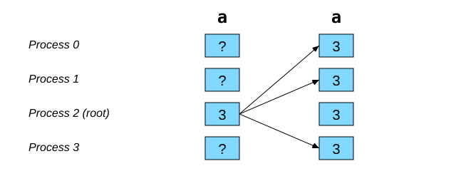
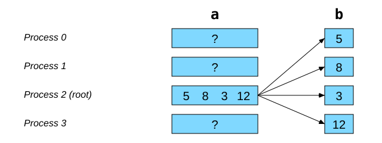
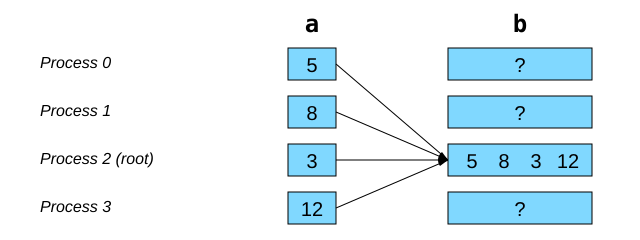
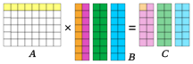
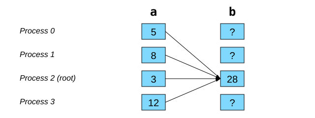
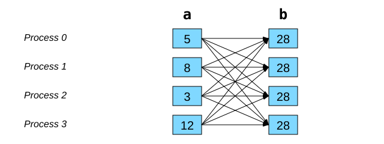
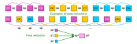

Collective communications#
Collective communications can:
move data;
comm.bcast()comm.scatter()comm.gather()
do collective computations.
comm.reduce(),comm.allreduce()
Each call to these methods must be made by all processes of the same communicator.
Collective data transfers#
Broadcasting data with bcast#
To send the same information to all processes in a communicator, a method performing a broadcast can be used:

With mpi4py, the code would be:
if rank == 2:
a = 3
else:
a = None
# bcast(obj: Any, root: int = 0) -> Any
a = comm.bcast(a, 2)
Data distribution with scatter#
To send a portion of the data to each process in a communicator, a method performing a distribution can be used:

With mpi4py, the code would be:
if rank == 2:
a = [5, 8, 3, 12]
else:
a = None
# scatter(seq_obj: Sequence[Any] | None, root: int = 0) -> Any
b = comm.scatter(a, 2)
Gathering data with gather#
To retrieve multiple data portions within a single process of a communicator,
the gather method
can be used:

With mpi4py, the code would be:
# gather(obj: Any, root: int = 0) -> list[Any] | None
b = comm.gather(a, 2)
if rank == 2:
for value in b:
print(value)
Workspace partitioning#
Before starting an exercise, let’s review how to divide the workspace. Recall the figure we saw in the introduction:
One strategy is to divide the workspace into more or less equal portions along one dimension. The goal is to determine at which index a process will begin its calculation and up to which (excluded) index it must calculate.
Since the size
Nof a dimension is not necessarily an integer multiple ofnranks, we cannot perform an integer division ofNbynranksto define a single portion size. This would risk omitting elements from the calculation.N = 18 # elements nranks = 5 # processes or portions portion_size = N // nranks # 3 elements per process assert portion_size * nranks == N, f'{portion_size * nranks} != {N}' # AssertionError: 15 != 18
However, we can calculate a lower bound and an upper bound for each portion based on the variable
rank. In the code below, we see two ways to calculate the lower boundstart. Subsequently, we would need to userank + 1in the same formulas to calculate the upper boundend.for rank in range(nranks): portion_size = N / nranks # 3.6 start_by_size_float = int(portion_size * rank) start_by_product_first = rank * N // nranks print(start_by_size_float, start_by_product_first) # 0 0 # 3 3 # 7 7 # 10 10 # 14 14
In the example below, the upper bound
endof therankprocess corresponds to the lower boundstartof therank + 1process. Thus, this bound calculation ensures that none of theNelements are overlooked while maintaining roughly equal calculation portions.for rank in range(nranks): # If rank is 0 (the first rank), then start is index 0 start = rank * N // nranks # If rank is nranks-1 (the last rank), then end is index N end = (rank + 1) * N // nranks print(f'{rank = } : {start = :2d}, {end = :2d} (diff = {end-start})') # rank = 0 : start = 0, end = 3 (diff = 3) # rank = 1 : start = 3, end = 7 (diff = 4) # rank = 2 : start = 7, end = 10 (diff = 3) # rank = 3 : start = 10, end = 14 (diff = 4) # rank = 4 : start = 14, end = 18 (diff = 4)
In practice, each process has only one
rank, so the two bounds of the portion are calculated only once.start = rank * N // nranks end = (rank + 1) * N // nranks # A selection of your choice portion_h = matrix[start:end, :] # A portion of a few lines portion_v = matrix[:, start:end] # A portion of a few columns
Exercise #4 - Matrix multiplication#
Objective: share the calculation of a matrix multiplication.
Since the matrix multiplication \(A \times B = C\) can be calculated column by column, each process will have the same matrix \(A\) and a unique portion of matrix \(B\), namely a block of a few consecutive columns from \(B\). The partial products will then be concatenated horizontally to form the resulting matrix \(C\).

Instructions
Go to the exercise directory with
cd ~/mpi201-main/lab/multiplication.In the file
matrices_en.py, edit the lines with.... Essentially, the root process:Creates matrix
Aand broadcasts this matrix to other processes.Creates roughly equal portions of
Binb_listand distributes one portion to each process.Gathers the partial multiplications in
c_listand generates the resulting matrixC.
Load a
scipy-stackmodule to gain access to NumPy.Run the program with two (2), three (3) and four (4) processes.
Collective calculations#
Reduction operations#
This is the equivalent of a gather with a loop performing a reduction
operation. Here are some reduction operations:
Operation |
Operator of type |
Op([3, 5]) |
|---|---|---|
|
5 |
|
|
3 |
|
|
8 |
|
|
15 |
|
|
True |
|
|
True |
|
|
False |
|
|
1 (011 & 101 = 001) |
|
|
7 (011 | 101 = 111) |
|
|
6 (011 ^ 101 = 110) |
Reduction with reduce#
Here is an example of a reduction that computes the sum of local results:

With mpi4py, the code would be:
# reduce(obj: Any, op: Op=SUM, root: int = 0) -> Any | None
b = comm.reduce(a, MPI.SUM, 2)
Reduction and broadcasting with allreduce#
It’s the equivalent of reduce + bcast, but it’s more efficient:

With mpi4py, the code would be:
# allreduce(obj: Any, op: Op=SUM) -> Any
b = comm.allreduce(a, MPI.SUM)
Division of the calculation space#
We recall this figure seen in the introduction:

The strategy of dividing the calculation space into more or less equal portions still works.
start = rank * N // nranks # lower bound end = (rank + 1) * N // nranks # upper bound # Loop in the interval: start <= k < end for k in range(start, end): ...
A second strategy involves defining a loop that starts at
rank, makes jumps ofnranks, and iterates until the end of the calculation space. Thus, each process starts the loop at a different index.for k in range(rank, N, nranks): ...
According to the calculation performed, it is possible that one of these two strategies will give a more stable numerical result.
Exercise #5 - Approximation of \(\pi\)#
Objective: divide the calculation of a long series approximating the constant \(\pi\).
Given:
And given the Taylor series:
It is therefore possible to approximate \(\pi\) with \(N\) terms:
With:
Numerically, the accumulation of terms must be done in reverse order, that is, starting with the smallest term, therefore with the index \(k=N-1\). This allows the smallest terms to be accumulated accurately while minimizing the accumulation of errors in the least significant bits of the final result.
Instructions
Go to the exercise directory with
cd ~/mpi201-main/lab/pi.In the file
pi-jumps.py, complete the conversion of the sequential program into a program using MPI.Use the strategy of making jumps of
nranksin a loop starting at a value ofkequal torank.Program a reduction of the local variables
my_suminto the variablepiof process 0.Run the program with
1,2,3and4processes.Use
time -pto measure the actual elapsed time. For example,srun -n 2 time -p python pi-jumps.py.Observe the accuracy of the approximation of pi and the
realtime of each process.
In the file
pi-portions.py, complete the conversion of the sequential program into a program using MPI.Use the strategy of looping from a lower bound to an upper bound.
Repeat steps 2.2 (reduction) and 2.3 (experimentation) above, but for the file
pi-portions.py.